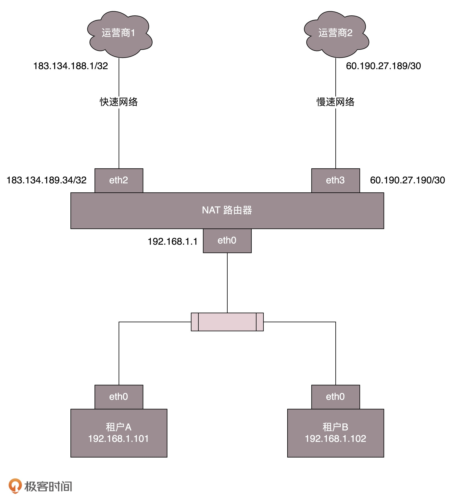
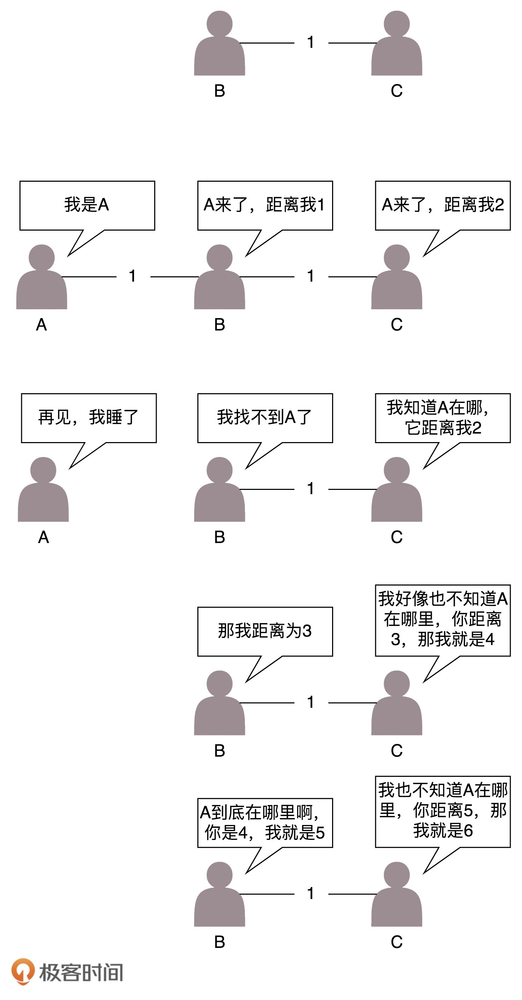

- 00 开篇词 想成为技术牛人？先搞定网络协议！.md.html
- 01 为什么要学习网络协议？.md.html
- 02 网络分层的真实含义是什么？.md.html
- 03 ifconfig：最熟悉又陌生的命令行.md.html
- 04 DHCP与PXE：IP是怎么来的，又是怎么没的？.md.html
- 05 从物理层到MAC层：如何在宿舍里自己组网玩联机游戏？.md.html
- 06 交换机与VLAN：办公室太复杂，我要回学校.md.html
- 07 ICMP与ping：投石问路的侦察兵.md.html
- 08 世界这么大，我想出网关：欧洲十国游与玄奘西行.md.html
- 09 路由协议：西出网关无故人，敢问路在何方.md.html
- 10 UDP协议：因性善而简单，难免碰到“城会玩”.md.html
- 11 TCP协议（上）：因性恶而复杂，先恶后善反轻松.md.html
- 12 TCP协议（下）：西行必定多妖孽，恒心智慧消磨难.md.html
- 13 套接字Socket：Talk is cheap, show me the code.md.html
- 14 HTTP协议：看个新闻原来这么麻烦.md.html
- 15 HTTPS协议：点外卖的过程原来这么复杂.md.html
- 16 流媒体协议：如何在直播里看到美女帅哥？.md.html
- 17 P2P协议：我下小电影，99%急死你.md.html
- 18 DNS协议：网络世界的地址簿.md.html
- 19 HttpDNS：网络世界的地址簿也会指错路.md.html
- 20 CDN：你去小卖部取过快递么？.md.html
- 21 数据中心：我是开发商，自己拿地盖别墅.md.html
- 22 VPN：朝中有人好做官.md.html
- 23 移动网络：去巴塞罗那，手机也上不了脸书.md.html
- 24 云中网络：自己拿地成本高，购买公寓更灵活.md.html
- 25 软件定义网络：共享基础设施的小区物业管理办法.md.html
- 26 云中的网络安全：虽然不是土豪，也需要基本安全和保障.md.html
- 27 云中的网络QoS：邻居疯狂下电影，我该怎么办？.md.html
- 28 云中网络的隔离GRE、VXLAN：虽然住一个小区，也要保护隐私.md.html
- 29 容器网络：来去自由的日子，不买公寓去合租.md.html
- 30 容器网络之Flannel：每人一亩三分地.md.html
- 31 容器网络之Calico：为高效说出善意的谎言.md.html
- 32 RPC协议综述：远在天边，近在眼前.md.html
- 33 基于XML的SOAP协议：不要说NBA，请说美国职业篮球联赛.md.html
- 34 基于JSON的RESTful接口协议：我不关心过程，请给我结果.md.html
- 35 二进制类RPC协议：还是叫NBA吧，总说全称多费劲.md.html
- 36 跨语言类RPC协议：交流之前，双方先来个专业术语表.md.html
- 37 知识串：用双十一的故事串起碎片的网络协议（上）.md.html
- 38 知识串：用双十一的故事串起碎片的网络协议（中）.md.html
- 39 知识串：用双十一的故事串起碎片的网络协议（下）.md.html
- 40 搭建一个网络实验环境：授人以鱼不如授人以渔.md.html
- 加餐1 创作故事：我是如何创作“趣谈网络协议”专栏的？.md.html
- 协议专栏特别福利 答疑解惑1期.md.html
- 协议专栏特别福利 答疑解惑2期.md.html
- 协议专栏特别福利 答疑解惑3期.md.html
- 协议专栏特别福利 答疑解惑4期.md.html
- 协议专栏特别福利 答疑解惑5期.md.html
- 结束语 放弃完美主义，执行力就是限时限量认真完成.md.html
- 捐赠
09 路由协议：西出网关无故人，敢问路在何方
俗话说得好，在家千日好，出门一日难。网络包一旦出了网关，就像玄奘西行一样踏上了江湖漂泊的路。
上一节我们描述的是一个相对简单的情形。出了网关之后，只有一条路可以走。但是，网络世界复杂得多，一旦出了网关，会面临着很多路由器，有很多条道路可以选。如何选择一个更快速的道路求取真经呢？这里面还有很多门道可以讲。
如何配置路由？
通过上一节的内容，你应该已经知道，路由器就是一台网络设备，它有多张网卡。当一个入口的网络包送到路由器时，它会根据一个本地的转发信息库，来决定如何正确地转发流量。这个转发信息库通常被称为路由表。
一张路由表中会有多条路由规则。每一条规则至少包含这三项信息。
目的网络：这个包想去哪儿？
出口设备：将包从哪个口扔出去？
下一跳网关：下一个路由器的地址。
通过route命令和ip route命令都可以进行查询或者配置。
例如，我们设置ip route add 10.176.48.0/20 via 10.173.32.1 dev eth0，就说明要去10.176.48.0/20这个目标网络，要从eth0端口出去，经过10.173.32.1。
上一节的例子中，网关上的路由策略就是按照这三项配置信息进行配置的。这种配置方式的一个核心思想是：根据目的IP地址来配置路由。
如何配置策略路由？
当然，在真实的复杂的网络环境中，除了可以根据目的ip地址配置路由外，还可以根据多个参数来配置路由，这就称为策略路由。
可以配置多个路由表，可以根据源IP地址、入口设备、TOS等选择路由表，然后在路由表中查找路由。这样可以使得来自不同来源的包走不同的路由。
例如，我们设置：
ip rule add from 192.168.1.0/24 table 10
ip rule add from 192.168.2.0/24 table 20
表示从192.168.1.10/24这个网段来的，使用table 10中的路由表，而从192.168.2.0/24网段来的，使用table20的路由表。
在一条路由规则中，也可以走多条路径。例如，在下面的路由规则中：
ip route add default scope global nexthop via 100.100.100.1 weight 1 nexthop via 200.200.200.1 weight 2
下一跳有两个地方，分别是100.100.100.1和200.200.200.1，权重分别为1比2。
在什么情况下会用到如此复杂的配置呢？我来举一个现实中的例子。
我是房东，家里从运营商那儿拉了两根网线。这两根网线分别属于两个运行商。一个带宽大一些，一个带宽小一些。这个时候，我就不能买普通的家用路由器了，得买个高级点的，可以接两个外网的。
家里的网络呢，就是普通的家用网段192.168.1.x/24。家里有两个租户，分别把线连到路由器上。IP地址为192.168.1.101/24和192.168.1.102/24，网关都是192.168.1.1/24，网关在路由器上。
就像上一节说的一样，家里的网段是私有网段，出去的包需要NAT成公网的IP地址，因而路由器是一个NAT路由器。
两个运营商都要为这个网关配置一个公网的IP地址。如果你去查看你们家路由器里的网段，基本就是我图中画的样子。

运行商里面也有一个IP地址，在运营商网络里面的网关。不同的运营商方法不一样，有的是/32的，也即一个一对一连接。
例如，运营商1给路由器分配的地址是183.134.189.34/32，而运营商网络里面的网关是183.134.188.1/32。有的是/30的，也就是分了一个特别小的网段。运营商2给路由器分配的地址是60.190.27.190/30，运营商网络里面的网关是60.190.27.189/30。
根据这个网络拓扑图，可以将路由配置成这样：
$ ip route list table main
60.190.27.189/30 dev eth3 proto kernel scope link src 60.190.27.190
183.134.188.1 dev eth2 proto kernel scope link src 183.134.189.34
192.168.1.0/24 dev eth1 proto kernel scope link src 192.168.1.1
127.0.0.0/8 dev lo scope link
default via 183.134.188.1 dev eth2
当路由这样配置的时候，就告诉这个路由器如下的规则：
如果去运营商二，就走eth3；
如果去运营商一呢，就走eth2；
如果访问内网，就走eth1；
如果所有的规则都匹配不上，默认走运营商一，也即走快的网络。
但是问题来了，租户A不想多付钱，他说我就上上网页，从不看电影，凭什么收我同样贵的网费啊？没关系，咱有技术可以解决。
下面我添加一个Table，名字叫chao。
# echo 200 chao >> /etc/iproute2/rt_tables
添加一条规则：
# ip rule add from 192.168.1.101 table chao
# ip rule ls
0: from all lookup local
32765: from 10.0.0.10 lookup chao
32766: from all lookup main
32767: from all lookup default
设定规则为：从192.168.1.101来的包都查看个chao这个新的路由表。
在chao路由表中添加规则：
# ip route add default via 60.190.27.189 dev eth3 table chao
# ip route flush cache
默认的路由走慢的，谁让你不付钱。
上面说的都是静态的路由，一般来说网络环境简单的时候，在自己的可控范围之内，自己捣鼓还是可以的。但是有时候网络环境复杂并且多变，如果总是用静态路由，一旦网络结构发生变化，让网络管理员手工修改路由太复杂了，因而需要动态路由算法。
动态路由算法
使用动态路由路由器，可以根据路由协议算法生成动态路由表，随网络运行状况的变化而变化。那路由算法是什么样的呢？
我们可以想象唐僧西天取经，需要解决两大问题，一个是在每个国家如何找到正确的路，去换通关文牒、吃饭、休息；一个是在国家之间，野外行走的时候，如何找到正确的路、水源的问题。

无论是一个国家内部，还是国家之间，我们都可以将复杂的路径，抽象为一种叫作图的数据结构。至于唐僧西行取经，肯定想走的路越少越好，道路越短越好，因而这就转化成为如何在途中找到最短路径的问题。
咱们在大学里面学习计算机网络与数据结构的时候，知道求最短路径常用的有两种方法，一种是Bellman-Ford算法，一种是Dijkstra算法。在计算机网络中基本也是用这两种方法计算的。
1.距离矢量路由算法
第一大类的算法称为距离矢量路由（distance vector routing）。它是基于Bellman-Ford算法的。
这种算法的基本思路是，每个路由器都保存一个路由表，包含多行，每行对应网络中的一个路由器，每一行包含两部分信息，一个是要到目标路由器，从那条线出去，另一个是到目标路由器的距离。
由此可以看出，每个路由器都是知道全局信息的。那这个信息如何更新呢？每个路由器都知道自己和邻居之间的距离，每过几秒，每个路由器都将自己所知的到达所有的路由器的距离告知邻居，每个路由器也能从邻居那里得到相似的信息。
每个路由器根据新收集的信息，计算和其他路由器的距离，比如自己的一个邻居距离目标路由器的距离是M，而自己距离邻居是x，则自己距离目标路由器是x+M。
这个算法比较简单，但是还是有问题。
第一个问题就是好消息传得快，坏消息传得慢。 如果有个路由器加入了这个网络，它的邻居就能很快发现它，然后将消息广播出去。要不了多久，整个网络就都知道了。但是一旦一个路由器挂了，挂的消息是没有广播的。当每个路由器发现原来的道路到不了这个路由器的时候，感觉不到它已经挂了，而是试图通过其他的路径访问，直到试过了所有的路径，才发现这个路由器是真的挂了。
我再举个例子。

原来的网络包括两个节点，B和C。A加入了网络，它的邻居B很快就发现A启动起来了。于是它将自己和A的距离设为1，同样C也发现A起来了，将自己和A的距离设置为2。但是如果A挂掉，情况就不妙了。B本来和A是邻居，发现连不上A了，但是C还是能够连上，只不过距离远了点，是2，于是将自己的距离设置为3。殊不知C的距离2其实是基于原来自己的距离为1计算出来的。C发现自己也连不上A，并且发现B设置为3，于是自己改成距离4。依次类推，数越来越大，直到超过一个阈值，我们才能判定A真的挂了。
这个道理有点像有人走丢了。当你突然发现找不到这个人了。于是你去学校问，是不是在他姨家呀？找到他姨家，他姨说，是不是在他舅舅家呀？他舅舅说，是不是在他姥姥家呀？他姥姥说，是不是在学校呀？总归要问一圈，或者是超过一定的时间，大家才会认为这个人的确走丢了。如果这个人其实只是去见了一个谁都不认识的网友去了，当这个人回来的时候，只要他随便见到其中的一个亲戚，这个亲戚就会拉着他到他的家长那里，说你赶紧回家，你妈都找你一天了。
这种算法的第二个问题是，每次发送的时候，要发送整个全局路由表。网络大了，谁也受不了，所以最早的路由协议RIP就是这个算法。它适用于小型网络（小于15跳）。当网络规模都小的时候，没有问题。现在一个数据中心内部路由器数目就很多，因而不适用了。
所以上面的两个问题，限制了距离矢量路由的网络规模。
2.链路状态路由算法
第二大类算法是链路状态路由（link state routing），基于Dijkstra算法。
这种算法的基本思路是：当一个路由器启动的时候，首先是发现邻居，向邻居say hello，邻居都回复。然后计算和邻居的距离，发送一个echo，要求马上返回，除以二就是距离。然后将自己和邻居之间的链路状态包广播出去，发送到整个网络的每个路由器。这样每个路由器都能够收到它和邻居之间的关系的信息。因而，每个路由器都能在自己本地构建一个完整的图，然后针对这个图使用Dijkstra算法，找到两点之间的最短路径。
不像距离距离矢量路由协议那样，更新时发送整个路由表。链路状态路由协议只广播更新的或改变的网络拓扑，这使得更新信息更小，节省了带宽和CPU利用率。而且一旦一个路由器挂了，它的邻居都会广播这个消息，可以使得坏消息迅速收敛。
动态路由协议
1.基于链路状态路由算法的OSPF
OSPF（Open Shortest Path First，开放式最短路径优先）就是这样一个基于链路状态路由协议，广泛应用在数据中心中的协议。由于主要用在数据中心内部，用于路由决策，因而称为内部网关协议（Interior Gateway Protocol，简称IGP）。
内部网关协议的重点就是找到最短的路径。在一个组织内部，路径最短往往最优。当然有时候OSPF可以发现多个最短的路径，可以在这多个路径中进行负载均衡，这常常被称为等价路由。

这一点非常重要。有了等价路由，到一个地方去可以有相同的两个路线，可以分摊流量，还可以当一条路不通的时候，走另外一条路。这个在后面我们讲数据中心的网络的时候，一般应用的接入层会有负载均衡LVS。它可以和OSPF一起，实现高吞吐量的接入层设计。
有了内网的路由协议，在一个国家内，唐僧可以想怎么走怎么走了，两条路选一条也行。
2.基于距离矢量路由算法的BGP
但是外网的路由协议，也即国家之间的，又有所不同。我们称为外网路由协议（Border Gateway Protocol，简称BGP）。
在一个国家内部，有路当然选近的走。但是国家之间，不光远近的问题，还有政策的问题。例如，唐僧去西天取经，有的路近。但是路过的国家看不惯僧人，见了僧人就抓。例如灭法国，连光头都要抓。这样的情况即便路近，也最好绕远点走。
对于网络包同样，每个数据中心都设置自己的Policy。例如，哪些外部的IP可以让内部知晓，哪些内部的IP可以让外部知晓，哪些可以通过，哪些不能通过。这就好比，虽然从我家里到目的地最近，但是不能谁都能从我家走啊！
在网络世界，这一个个国家成为自治系统AS（Autonomous System）。自治系统分几种类型。
Stub AS：对外只有一个连接。这类AS不会传输其他AS的包。例如，个人或者小公司的网络。
Multihomed AS：可能有多个连接连到其他的AS，但是大多拒绝帮其他的AS传输包。例如一些大公司的网络。
Transit AS：有多个连接连到其他的AS，并且可以帮助其他的AS传输包。例如主干网。
每个自治系统都有边界路由器，通过它和外面的世界建立联系。

BGP又分为两类，eBGP和iBGP。自治系统间，边界路由器之间使用eBGP广播路由。内部网络也需要访问其他的自治系统。边界路由器如何将BGP学习到的路由导入到内部网络呢？就是通过运行iBGP，使得内部的路由器能够找到到达外网目的地的最好的边界路由器。
BGP协议使用的算法是路径矢量路由协议（path-vector protocol）。它是距离矢量路由协议的升级版。
前面说了距离矢量路由协议的缺点。其中一个是收敛慢。在BGP里面，除了下一跳hop之外，还包括了自治系统AS的路径，从而可以避免坏消息传得慢的问题，也即上面所描述的，B知道C原来能够到达A，是因为通过自己，一旦自己都到达不了A了，就不用假设C还能到达A了。
另外，在路径中将一个自治系统看成一个整体，不区分自治系统内部的路由器，这样自治系统的数目是非常有限的。就像大家都能记住出去玩，从中国出发先到韩国然后到日本，只要不计算细到具体哪一站，就算是发送全局信息，也是没有问题的。
小结
好了，这一节就到这里了，我来做个总结：
路由分静态路由和动态路由，静态路由可以配置复杂的策略路由，控制转发策略；
动态路由主流算法有两种，距离矢量算法和链路状态算法。基于两种算法产生两种协议，BGP协议和OSPF协议。
最后，再给你留两个思考题：
路由协议要在路由器之间交换信息，这些信息的交换还需要走路由吗？不是死锁了吗？
路由器之间信息的交换使用什么协议呢？报文格式是什么样呢？
欢迎你留言和我讨论。趣谈网络协议，我们下期见！
© 2019 - 2023 Liangliang Lee. Powered by gin and hexo-theme-book.